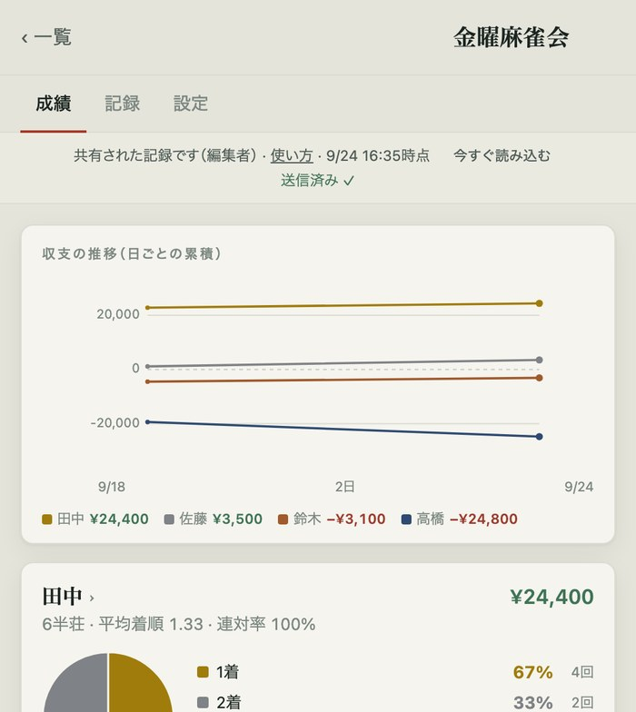

MAHJONG SCORE · USER GUIDE
麻雀成績
使い方ガイド
まずは自分の成績を。
点数を入れるときは、後半を開いてください。
01
自分の成績を見る
幹事から届いたリンクを開けば使えます。インストールは不要です。
START HERE
自分のカードを探す
1届いたリンクを押します。
2画面上部の「成績」を押します。
3初めて使うときは、画面上部の「あなたは誰ですか？」から、必要なら「自分を選ぶ」を押します。選ばなくても使えます。
4名前を選ぶと、自分のカードが先頭に出ます。自分のカードを押すと詳しい成績を見られます。
名前を選ぶと、最初の案内は消えます。 あとから変えるときは、閲覧者は「表示設定」で名前を選びます。編集者は「設定」→「メンバー」の「自分」で選び直します。表示の好みは、この端末だけに保存されます。
コミュニティ名の横に「閲覧者」と出る人は、成績を見るリンクです。「編集者」と出る人は、点数の入力もできます。

成績タブ · グラフの下に一人ずつのカード（画面例）
WHAT YOU CAN SEE
どんなデータが見られる？
収支の流れみんなの日ごとの収支を積み上げたグラフ。自分を選ぶと、グラフの上に自分のカードが出ます。
自分のカード収支、1〜4着の割合、平均着順、連対率
ポイントの内訳成績ポイント、チップなど
カードを押した先席ごとの成績、自己ベスト、相手ごとの成績など
02
困ったとき
まずは、画面に出ている表示に近いものを探してください。
| こんなとき | 試すこと |
|---|
| みんなへの送信待ちと出たまま | 点数はスマホに保存されています。電波のある所で「今すぐ送る」を押します。 |
| 入れた記録がほかの人に見えない | 入れた人の画面が「みんなに反映済み ✓」か確認します。見る人は「今すぐ読み込む」を押すか、アプリを開き直します。 |
| 同じ半荘が2つある | 片方の半荘を開き、「修正」から「この半荘を削除」を押します。同じ半荘を2人が入力すると2件になります。 |
| 「通信できませんでした」と出た | 電波のある所で、届いたリンクかアイコンから開き直します。保存できた記録はスマホに残っています。 |
| 「共有された記録を読み込めませんでした」と出た | リンクが古いか、共有が止められている可能性があります。幹事にリンクを送り直してもらってください。 |
| アイコンから開くと記録が出ない | アイコンを消します。届いたリンクを開き直し、記録が出た画面から追加し直します。 |
| マイナスの点数が入らない | 数字の左の「＋」を押して「−」にします。 |
| 席を間違えた | 記録前なら席を選び直します。記録後なら半荘を開いて「修正」を押します。 |
入力係を1人決めておくと安心です。
2人が同じ日に別々の記録を入れても両方残ります。同じ半荘を重ねて入れた場合は、片方を削除してください。
アプリのトップ画面と、共有された記録の画面上部にも「使い方ガイド」「使い方」のリンクがあります。